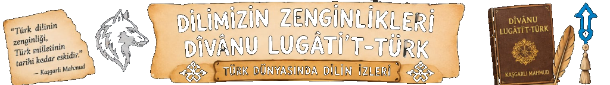
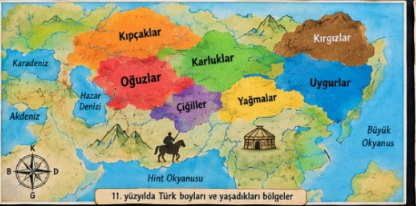
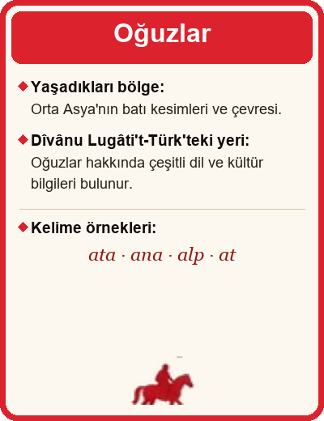
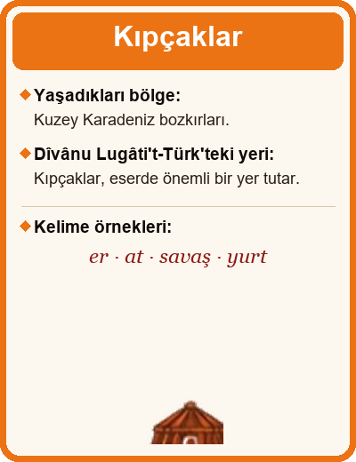
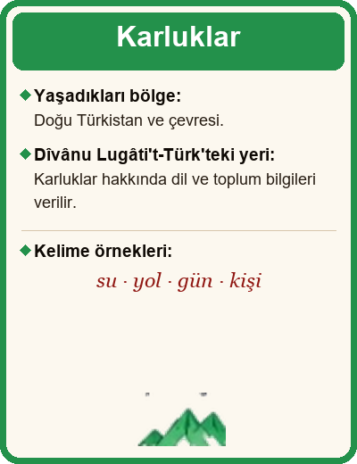
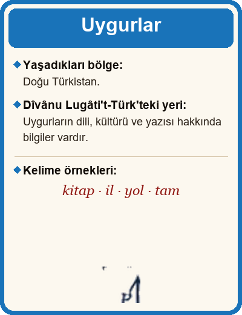
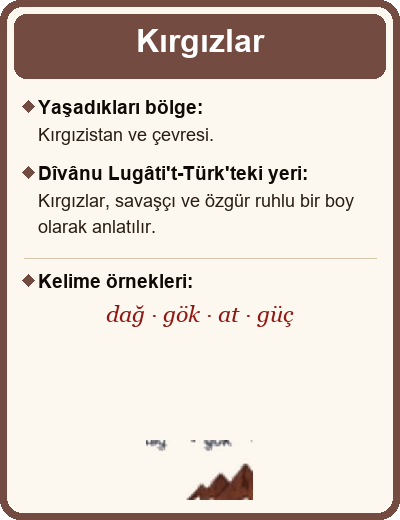
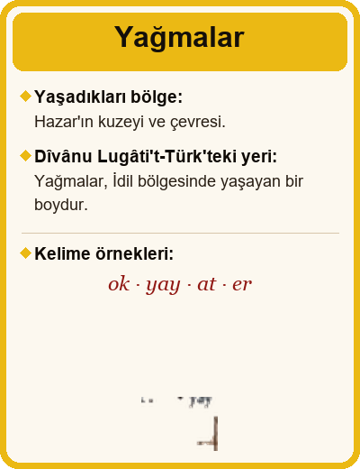

❖
❖
❖
❖



Kıpçaklar
Oğuzlar
Karluklar
Çiğiller
Yağmalar
Uygurlar
Kırgızlar
Türk Boyları ve Yaşadıkları Bölgeler
Oğuzlar
Orta Asya'nın batı kesimleri, Anadolu ve çevresi
Kıpçaklar
Kuzey Karadeniz bozkırları
Karluklar
Doğu Türkistan ve çevresi
Uygurlar
Doğu Türkistan
Kırgızlar
Kırgızistan ve çevresi
Çiğiller
Seyhun ve Ceyhun arasındaki bölge
Yağmalar
Hazar'ın kuzeyi ve çevresi





